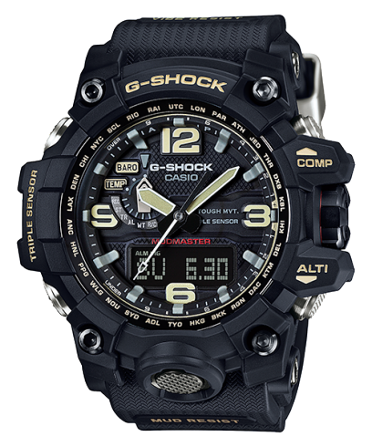
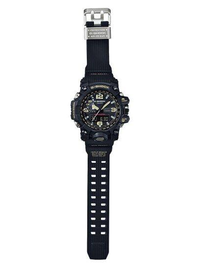

MASTER OF G-LAND MUDMASTER GWG-1000-1A


MASTER OF G-LAND MUDMASTER GWG-1000-1A3
The G-Shock Mudmaster is built to withstand the harshest environments. It is specifically designed for use in muddy and dusty conditions, making it perfect for military personnel and outdoor enthusiasts. The Mudmaster features mud-resistant buttons, an analog-digital display, and advanced features like a compass, thermometer, and barometer. Its shock-resistant structure and water resistance up to 200 meters make it ideal for tough adventures.